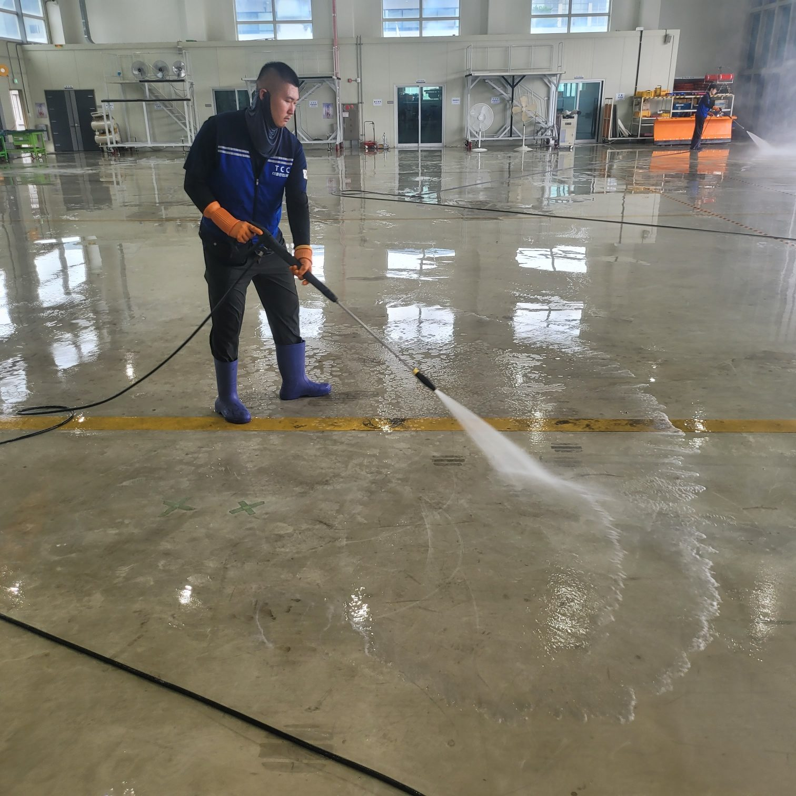
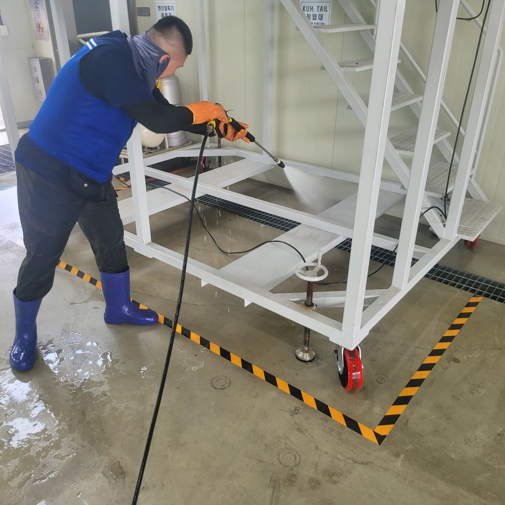
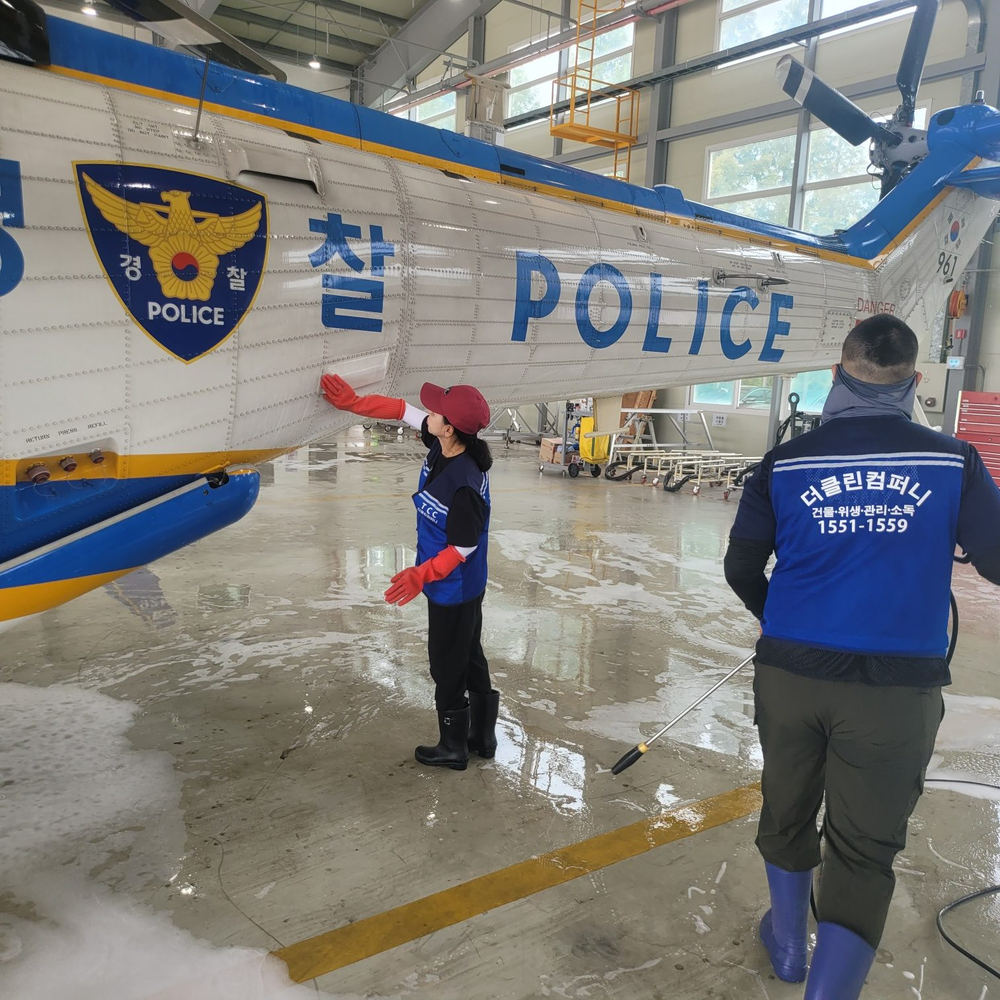
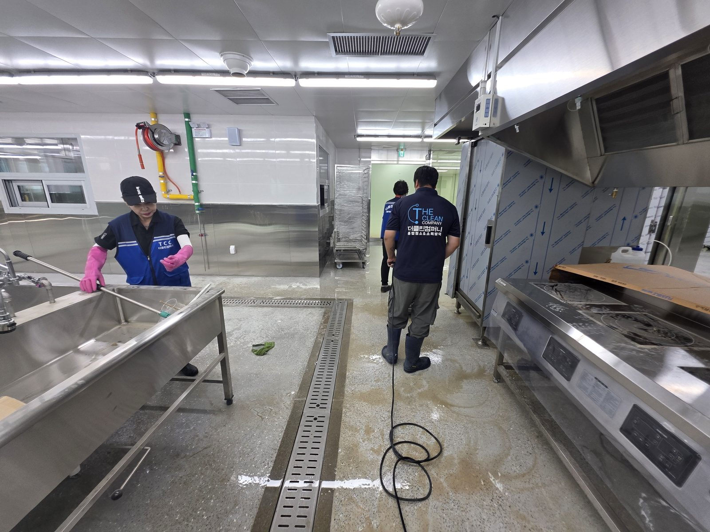
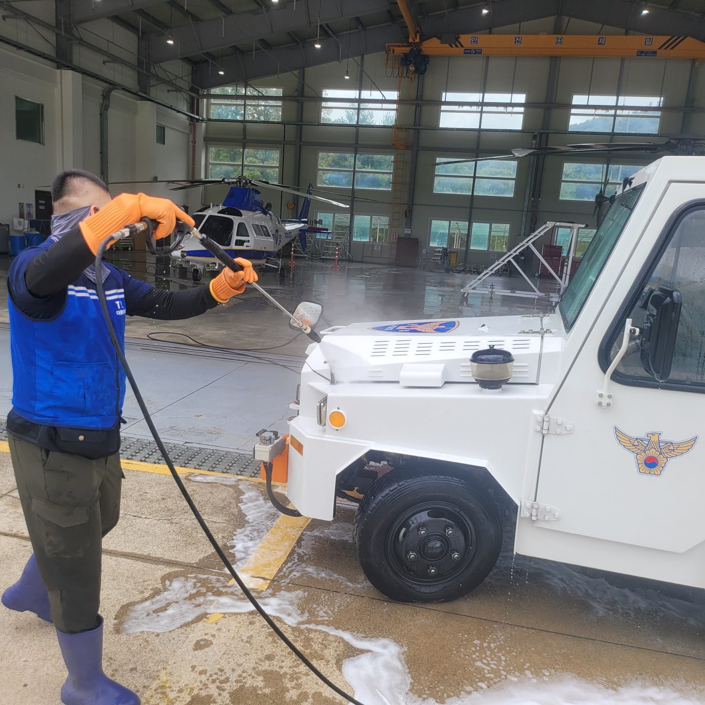
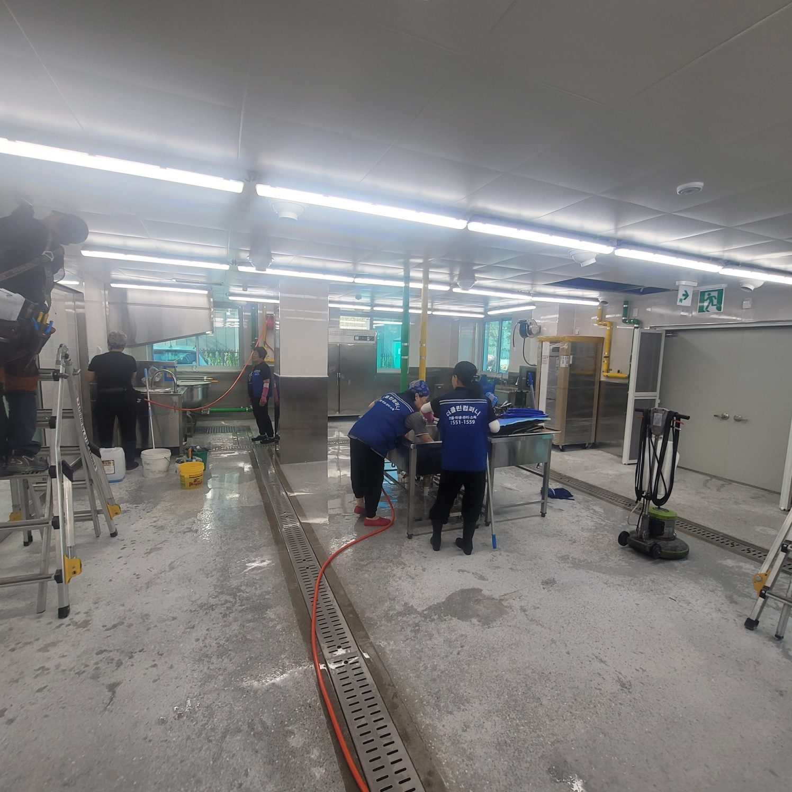

바닥에 굳은 유분과 분진
지게차 동선을 따라 쌓인 기름때는 미끄럼 사고로 이어집니다. 일반 청소로는 걷히지 않아 전용 세정제와 고압세척이 필요합니다.
안산과 인근 시흥에서 확인되는 상태도 크게 다르지 않습니다.

지게차 동선을 따라 쌓인 기름때는 미끄럼 사고로 이어집니다. 일반 청소로는 걷히지 않아 전용 세정제와 고압세척이 필요합니다.

기계 사이와 하부는 사람 손이 닿지 않아 가장 늦게까지 남습니다. 분해가 필요한 구간은 담당자와 범위를 먼저 정합니다.

바닥 배수로에 쌓인 침전물은 악취와 해충의 원인이 됩니다. 위생 점검에서 먼저 지적되는 부분입니다.
조업 중인 공장은 안전이 먼저입니다. 작업 구역과 생산 동선이 겹치지 않도록 구획을 나누고 유도 인원을 둡니다.
안산 현장도 같은 절차로 진행하며, 현장 조건에 따라 장비와 보양 범위를 조정합니다.
조업 일정과 정지 가능 시간을 먼저 확인하고 구역을 나눕니다.

제어반, 모터, 센서를 방수 보양하고 전원 차단 범위를 확인합니다.
천장과 배관의 분진을 먼저 털어낸 뒤 설비와 구조물을 세척합니다.
트렌치 침전물을 걷어내고 배수구까지 뚫어 냄새 원인을 제거합니다.
유분 제거 후 물기를 밀어내고 담당자와 구역별로 확인합니다.
안산에서는 식품·급식 시설의 조리장과 가공실, 기계 공장의 설비 하부와 바닥, 물류센터 입출고장이 주된 작업 구역입니다. 관공서 정비동과 특수시설 세척 경험도 있습니다.
경기 안산시 전역으로 출장합니다. 상록구 · 단원구 (반월 산단 · 시화 MTV 일대) 등 안산 안쪽은 물론, 인접한 시흥 · 화성 · 군포 현장도 화성동탄점이 함께 관리하고 있어 가까운 일정을 묶으면 이동 비용을 줄일 수 있습니다.
대표번호 1551-1559로 접수하시면 화성동탄점 담당자에게 바로 연결됩니다. 현장 주소와 사진을 함께 보내주시면 상담이 빨라집니다.
안산 현장은 야간이나 휴무일 작업 요청이 많습니다. 일정만 맞으면 그대로 맞춰 들어갑니다.
현장 확인 후 항목별로 견적을 드리며, 추가 작업이 생기면 먼저 알려드리고 동의를 받은 뒤 진행합니다. 작업이 끝난 뒤에 금액이 늘어나는 일은 없습니다.
세금계산서와 완료확인서까지 갖춰 드립니다. 관공서·관급 발주에 필요한 서류는 미리 말씀해 주시면 준비합니다.
건물위생관리업과 소독업 신고를 마친 업체로, 산업안전 기준에 맞춰 장비 점검표를 작성하고 시작합니다. 점검 기록은 발주처에 함께 드립니다.
보정 없이 촬영한 실제 작업 사진입니다.




화성동탄점 팀이 갑니다. 안산은 상담부터 시공까지 같은 팀이 맡아 진행하며, 인근 시흥 현장도 함께 관리합니다.
구역을 나눠 진행하면 전면 중단 없이 가능합니다. 완전 정지가 필요한 구간은 휴무일이나 야간으로 잡습니다.
제어반과 모터는 방수 보양 후 진행하고, 물 사용이 어려운 설비는 건식으로 작업합니다.
일반 폐기물은 반출까지 포함합니다. 지정폐기물은 별도 절차가 필요해 사전에 협의합니다.
건물위생관리업·소독업 신고 업체로 세척과 소독을 함께 진행하고 작업 기록을 드립니다.
가능합니다. 월·분기 단위로 범위와 금액을 정해두면 매번 견적을 내지 않아도 됩니다.